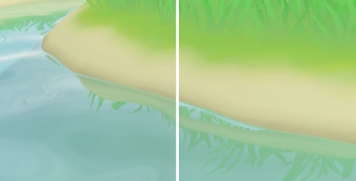
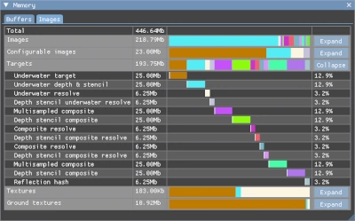

Since the concept artist has now joined the team, we need a way to test and align designs with the actual game. The game is full of colors and parameters that are hidden all over the place, so I decided to make a tool that finds them, groups them together and makes them editable without diving into the code. The video shows how the color of the sand underwater can easily be changed.
The color isn't just updated in the code somewhere, the development build of the game that's running next to the tool also detects that a change has occurred, and reloads the relevant resources to immediately display the result. This is often called hot reloading. This changes the process of fine-tuning parameters from awkwardly trying to process feedback from the concept artist and rebuilding the game many times to just letting the concept artist play with things until they are perfect.
Another thing that supports hot reloading is audio. The first audio events have now been implemented. I trigger sound events and set the relevant parameters on my end, and then I send a development build to the sound designer which connects to the audio engine so she can adjust the audio events until they work well with the game.

Another thing I've added are reflections. The water now reflects anything above it. There are several methods to render these, but I've gone for one that's rarely used: screen space planar reflections. As opposed to rather expensive tricks that use ray marching or even raytracing, Koi Farm 2 only has one reflecting plane (the water), so I can make some assumptions other methods can't. Every pixel that's not water calculates where it would reflect in the water plane, and if that reflected pixel is actually a water pixel, it writes the location of the source pixel to a buffer. The water shader then later reads that buffer to find out which pixels reflected themselves there, and distorts the reflection depending on the wave pattern.
One disadvantage of this method is that when waves hide the shore, the shore doesn't reflect itself. I've had to clamp reflections by both warping the reflection plane depending on the wave height and by rendering extra shore pixels into the reflection buffer, to make sure no gaps appear.

Apart from hot reloading, I've added some other useful engine tools. One of them is a better memory profiler, which shows me exactly how much memory is allocated and where it's spent. Optional effects like reflections and refractions have an impact on the games memory usage, and these tools allow me to see what memory profiles are suitable for low-end devices. I hope RAM prices will cool down by the time Koi Farm 2 releases, but if not, the engine can comfortably run on a very low memory footprint. Of course this is always useful on consoles and mobile, and it will allow me to use RAM for nicer things, like increasing the koi and plant limits.
I've also made a better profiling interface that shows me exactly how long every different graphics pipeline takes to render, so I can verify whether performance improvements are actually improvements. GPUs are often black boxes, so the only way to verify whether something is an improvement is to profile it.